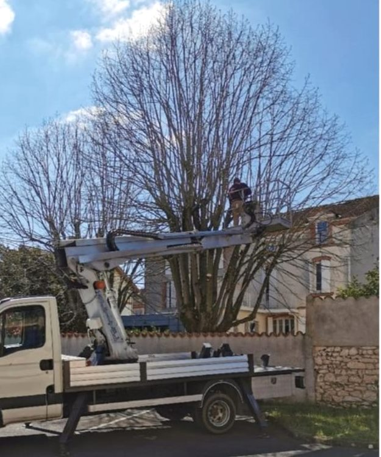
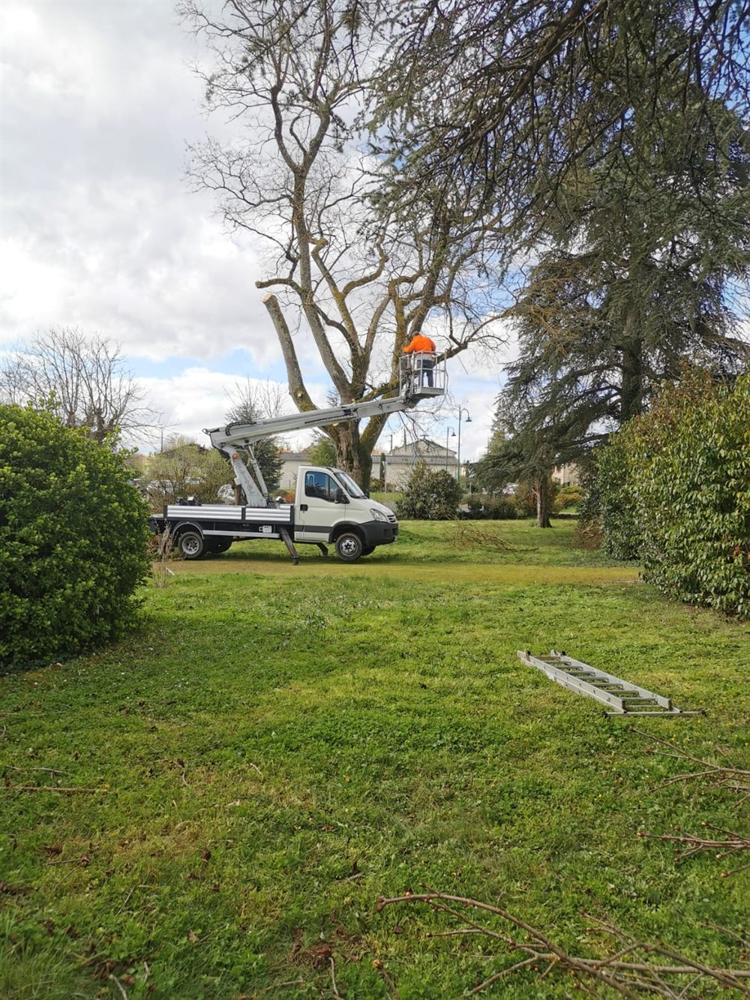

Accueil › Élagage à Castres
Tarn (81) · Devis gratuitÉlagage et abattage à Castres
Nous intervenons à Castres et dans les communes voisines : élagage, abattage, taille de haie, débroussaillage, avec notre camion-nacelle.
- Devis gratuit
- Déplacement gratuit
- Camion-nacelle
- Castres et alentours
Ce que nous faisons à Castres
- Élagage et taille d’arbres, même hauts ou difficiles d’accès
- Abattage, y compris démontage en hauteur
- Taille de haie depuis la nacelle
- Débroussaillage et entretien d’espaces verts
- Étêtage d’arbres devenus trop grands
Des besoins différents selon le terrain
En ville, les arbres poussent souvent près des maisons, des murs et des parkings, et l’accès n’est pas toujours simple. Le camion-nacelle permet de travailler en hauteur sans abîmer le jardin, et de démonter un arbre morceau par morceau quand il n’y a pas la place de l’abattre d’un coup.
Autour de Castres
Nous nous déplaçons aussi à : Labruguière, Aussillon, Roquecourbe, Lagarrigue, Valdurenque, et dans le reste du Tarn.


Un arbre à faire voir à Castres ?
Appelez-nous ou envoyez-nous un SMS avec une photo : nous vous répondons et vous proposons un devis gratuit.